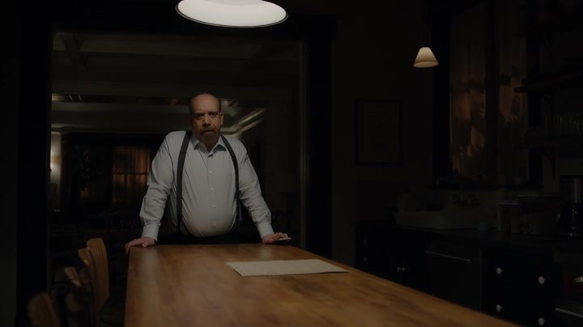

01
东区询问室 → 三天前
先看见豁免，再看见父子为何走到这里

剧情事实开场中，布莱恩依据 Ira 的陈述与资金规模，指向查克动用信托的布局；检方提出豁免换老人合作，画面暂不交代答复。叙事随后退回三天前：Dake 告诉查克，布莱恩可能已找上父亲。查克担心父亲不听劝，决定设法恢复对话。[1][2]
这一场为什么重要 · 个人解读
悬置答复，让本集的父子相处始终带着另一张询问桌的阴影。Dake 的提醒也再次证明正式分区没有切断秘密通报，查克知道的不只是证据，还有对方接近哪个人。父亲此时既是受伤的家人，也是可能决定他政治与职业命运的证人。
因此 → 修复关系有了紧迫的自保目的，但老人会怎样选择，要等本集后段揭示。